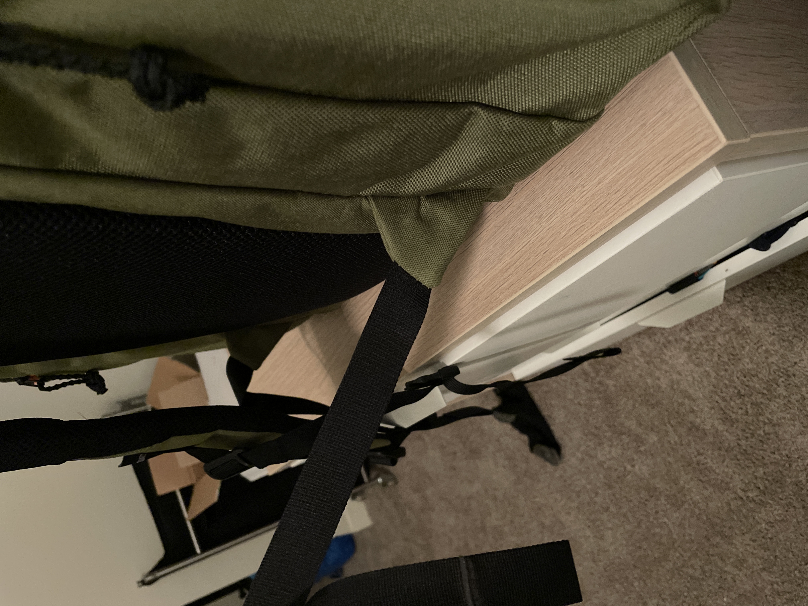

Squatch Legend Review
A Disc Golf Bag Review.

The Squatch Legend at Beaver Ranch DGC.
Background
I am relatively new to Disc Golf, having played some in high school and college, but I began to take the sport more seriously in October of 2020. As I continued to play, the need to add new shots to my game came with the need for an increased disc capacity, so I began shopping for a bag. Squatch is a relatively new company on the scene as of January 2022, and as of this time the Legend is their sole product. This bag has been getting a lot of attention in the disc golf community due to its massive carrying capacity, high quality material choices, and competitive pricepoint. After researching several options for disc golf backpacks, I decided to place an order with Squatch.
While this is my first disc golf specific backpack, it is certainly not my first high-quality backpack purchase. I'm a pretty serious backpacker, having used high-quality packs from companies like ULA and Pa'lante. However, it should be noted that I don't have much experience comparing this bag side-by-side with other disc golf bag offerings.
Since this product is pretty expensive ($260 + shipping at the time of this review) I plan on keeping this review up-to-date with new information as I continue to use the bag. Hopefully this review will be helpful for some in their purchasing decisions!
First Impressions (Pre Round)
First time unboxing the Legend. Looks pretty cool!
Materials - 10/10
Disclaimer: this was a big reason I purchased the bag because I've had experience with 1000d Cordura fabric in the past on backpacking bags.
The material feels essentially bomb proof. Even if it isn't, Squatch has a good warranty (at the time of this review it's for life), the material is easy to find and it's gonna be pretty possible to repair the bag. Very lightweight, good texture, the color is nice.
The zippers are somewhat water-sealed which is a nice touch in my eye. The foam on the straps is very thick, which I really like. The cooler feels like it's pretty decent in quality. Overall, I'm really happy with the materials on this bag, and I'd use any of them in my own backpacking bags.
Bag Layout - 7/10
A typical loadout for the Legend.
The Legend has a HUGE main compartment, I don't know the total capacity but I can't fill it with my current most-used discs. Gonna be sick for field days.
The putter pocket can easily fit 4 putters. The top flap kind of just tucks into this pocket which is sort of weird and not that clean. I put a mini up there too. The pocket is a bit too deep for my tastes, so I took inspiration from Doth and put a few extra towels in the pocket to raise the putters up a bit.
The two side pockets are pretty massive which is exactly what I wanted. They have pretty good internal organization options, but the internal pockets are very low-profile which I don't personally prefer (I'd like them to be a bit looser than they are). The phone pocket is a super sweet touch, I love that it's magnetic.
Water bottle pockets are very wide, can fit Nalgene x2. The cooler pretty much only can live in the dedicated cooler pocket. Molle webbing on one side is great for attaching stuff you might want to attach with a carabiner or something (I put a towel there).
There's also a super slick water bladder pocket, and ports on either side for a hose.
My biggest complaint with the layout is that it's just too big for my needs realistically, the internal org on the side pockets could be better (some of the pockets are a bit too tight for me), and the putter pocket design is a bit weird in my eyes.
Ease of Use - 8/10
It's pretty easy to pull discs in and out of the large main compartment. The zippers are pretty tight, so they're somewhat hard to move with just one hand. The bag sits upright and is tall enough for it to be easy to access the putters.
The main compartment is a bit low, but that's just a side effect of the bag being a backpack design.
The main compartment is a bit tougher to access with a disc in the front flap pocket.
Most of your stuff can be easily accessed, but the zippers are definitely a bit tough to move with one hand. This isn't a huge issue to me.
Build Quality - 8/10
Pretty solid stitching, with some minor issues (stitches that aren't perfectly straight, some threads that are exposed, similar minor issues) that seem intermittent enough to not bother me.
I worry that the straps aren't stitched in as tightly as they could be, but considering the loads this bag will be under (fairly light) I don't really see it as an issue.
Zipper pulls are a weird texture in my opinion, but it's not really a knock on the bag. These are also user-replaceable with something like paracord or another preferred material.
Looks - 9/10

Not only does the Legend look awesome, it looks right at home in the mountain courses of Colorado.
I like it way more in person that I did in photos. The colors are really nice and vibrant, and the shape of the bag is not as squat as I initially thought it would be.
The only knock on it is that I wish some of the branding would be more minimal (specifically the 'SQUATCH' on the phone flap).
The bag looks amazing in my opinion.
Overall First Impressions - 8/10
My first impression is that this seems like an awesome bag with only a few minor issues.
It's super cool that it feels like the bag can be expanded to fit my needs wherever I'm at in my game - from carrying just a few discs to carrying duplicates of every mold for a tournament.
I'm amazingly impressed with the quality at this price point - I'm comparing this to backpacking bags and I can say that I think the price is justified, and it's honestly a steal for the quality and feature-set offered.
The deal breaker for you is gonna be the layout vs something like the Upper Park Rebel or the Fossa Skinny pack.
I can't wait to do a longer-term review of it once I've used the bag for a few rounds.
Thoughts after 5-6 Rounds of Play
Pain Points
-
The strap attachment is a bit narrow for me, which causes the bottom webbing of the straps to rub against my hips, causing some chafing. This was pretty noticeable and really annoying after playing two consecutive rounds here in Colorado (lots of elevation change, hiking and walking briskly), and gave me some worry about the comfort of the bag long-term.
Fortunately, I found this issue was fully mitigated after adopting the following strategies:
- Wearing the bag with the straps cinched all the way up. This makes taking the bag on and off a bit more difficult, but it's my preferred way to carry the bag anyways.
- Wearing the bag on one shoulder intermittently. This makes sense to me because it's easier to swing the bag on and off in this configuration as well.
Please note that when I experienced these issues, I was wearing a loose-fitting cotton T-Shirt as well, which kind of accentuated the issues I was experiencing. However, I think that the bag should be comfortable to wear regardless of what I want to wear on the course, so I find myself wishing that the fit was better.
I will continue to keep readers updated with my impressions of this specific shortcoming long-term.
A quick look at the narrow attachment point of the straps.
-
The mesh material used on the back panel and shoulder straps could be a bit smoother. I find it to be somewhat rough which can cause some minor discomfort when wearing and when taking the bag on and off.
-
The putter pocket is a bit deep without modification. I took Doth's advice and stuffed a few extra towels in the pocket to lift the putters up, which I prefer. I now carry 4 putters up there and find it to be a really useful pocket.
Things I Love
-
The cooler insert works perfectly and I find it to be super versatile. Really great for carrying drinks or snacks and keeping them cool.
-
Side pockets are massive and can carry a lot of stuff. Really useful for the changing conditions here in the Mountain West.
-
Molle webbing works great for attaching stuff to the exterior of the pack.
Other Observations
-
You can really easily overload this bag. I would advise against carrying more than you need, even though with this thing the temptation to load it up with discs and gear is real.
-
I don't find myself using the phone pocket all that much since I keep my phone on me. That might change if I decide to play disc golf more competitively, but for now I find myself keeping my phone in my pocket. I’ll give it a shot at some point and see how it is.
-
I discovered that the velcro on the underside of the main pocket flap allows the user to velcro the flap up and out of the way. Really nice attention to detail by the guys at Squatch!
Thoughts after 15-20 Rounds of Play
-
I find myself slinging the bag over one shoulder far more frequently than I thought I would. I think I'm just so worried about chafing still!
-
Stripping down what I carry for a round has made a big difference for my comfort.
-
I really appreciate how the bag works well in changing conditions, loadouts and the like. It's so lightweight that I find myself using it for all my rounds rather than rotating with the smaller sidebag I used before this.
-
A feature I've come to love is the clamshell pockets on the inside of the side pockets. They're perfect grab and go pockets for random stuff you might bring to a round (AirPods, sunglasses, yoyo, etc).
-
The bag still looks brand new. I wonder if it'll ever look worn in at this point! It always feels like I have a new bag at the course, which is a pro or a con depending on your perspective.
Current Verdict
I'm still very happy with the purchase of this bag, though it did take me some getting used to.
The material quality is awesome - I dropped a giant stick I was using to get my disc out of a tree directly on the bag and there's pretty much no abrasion to show.
I think a great addition to the Squatch lineup would be more customizable strap options. Companies like ULA do this, and Pound allows the user to replace straps as well. This could also lead the way to fine-tuning the fit of the pack, making it as comfortable as possible for all users.

The Squatch Legend is an awesome bag that deserves all the praise it has received. I have been really enjoying using it for all of my more recent rounds. The cooler insert makes it so easy to bring along snacks, sparkling water and other fine beverages ;)
Check out the Squatch legend here.
Return to Blog